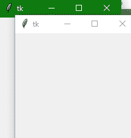

Tkinter 顶层小部件
在本教程中，我们将介绍 Python 中的 Tkinter 顶层小部件，该小部件用于创建和显示顶层窗口，而不是应用窗口。
在 Tkinter 顶级小部件的帮助下，您可以在父窗口顶部的单独窗口中为用户提供额外信息。
使用顶层小部件创建的这个顶层窗口由窗口管理器直接组织和管理。
顶层窗口不一定要有家长在上面。
您可以创建多个顶层窗口。
使用创建的顶级窗口顶级小部件包含标题栏、边框、以及一些窗口装饰。
借助这个小工具，你可以在新窗口上提供弹出、一些额外信息、或者一些小工具。
Tkinter Toplevel Widget
Tkinter 顶级小部件的语法如下:
W = Toplevel(master,options)
在上面的语法中，master参数表示父窗口。您可以使用许多选项来配置您的顶级小部件，这些选项被写成逗号分隔的键值对。
Tkinter Toplevel Widget 选项:
下面给出了与 Tkinter 顶级小部件一起使用的各种options:
| 选项名称 | 描述 |
|---|---|
bd |
来表示窗口的边框尺寸 |
bg |
来表示窗口的背景颜色 |
class_ |
一般来说，在文本小部件中选择的文本只需导出即可选择到窗口管理器。也可以将该选项的值设置为 0，使这种行为为假。 |
cursor |
该选项将鼠标指针转换为指定的光标类型，并可设置为箭头、点等。 |
width |
该选项用于表示窗口的宽度 |
height |
该选项用于表示窗口的高度 |
font |
此选项指示要插入到小部件中的文本的字体类型**。** |
fg |
该选项用于指示小部件的前景色。 |
relief |
该选项表示窗口的类型。 |
Tkinter 顶层小部件方法:
下面给出了 Tkinter 顶级小部件使用的各种方法:
| 方法 | 描述 |
|---|---|
title(string) |
该方法用于定义窗口的标题。 |
withdraw() |
该方法用于删除窗口，但不会破坏窗口。 |
positionfrom(who) |
该方法用于定义位置控制器 |
sizefrom(who) |
该方法用于定义尺寸控制器。 |
minsize(width,height) |
该方法用于声明窗口的最小尺寸 |
maxsize(width,height) |
该方法用于声明窗口的最大尺寸 |
resizable(width,height) |
此方法用于控制窗口是否可以调整大小。 |
transient([master]) |
该方法用于将窗口转换为临时窗口 |
iconify() |
此方法用于将顶层窗口转换为图标。 |
deiconify() |
这个方法是主要用来显示窗口。 |
frame() |
为了指示系统相关的窗口标识符，使用该方法。 |
group(window) |
此方法用于将顶级窗口添加到指定的窗口组 |
protocol(name,function) |
该方法用于指示将为特定协议调用的功能 |
state() |
该方法用于获取窗口的当前状态。该选项的一些可能值是正常、图标、撤回和图标。 |
Tkinter 顶层小部件示例
下面我们有一个基本的例子，我们将创建一个简单的顶层窗口。
from tkinter import *
win = Tk()
win.geometry("200x200")
def open():
top = Toplevel(win)
top.mainloop()
btn = Button(win, text="open", command=open)
btn.place(x=75, y=50)
win.mainloop()

在上面的代码中，我们已经创建了一个顶级小部件，该部件是在单击按钮时创建和启动的。
总结:
所以现在我们知道什么是 Tkinter Toplevel 小部件，以及如何创建它。Tkinter Toplevel 小部件很适合在不同的窗口中显示应用的某些部分，该窗口显示在主应用窗口的顶部。